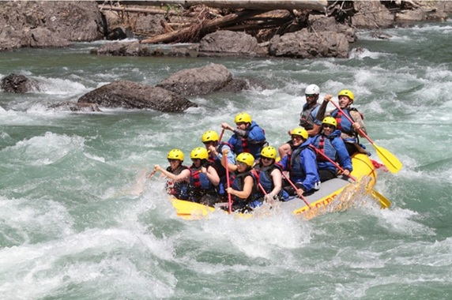

At Calabar Rapids Rafting, our mission is to provide exciting, safe, and memorable white water rafting experiences. We believe that adventure brings people together and creates memories that last a lifetime. Our friendly team is committed to helping every visitor enjoy the beauty and excitement of the river.